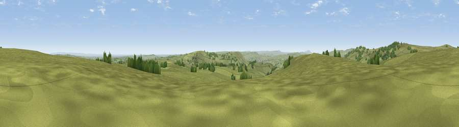

Viewpoint near Bolton Abbey
#14632 in England · top 22% of its area beats it · near Bolton AbbeyThe view, rendered

A 360° render of this exact spot computed from the terrain model, tree cover and land cover — summer colours, afternoon light, calibrated against photographs of famous viewpoints. Real trees, hedges and buildings will differ in detail.
The panorama
Grey silhouette: terrain skyline in each direction (720 bearings, Earth curvature and refraction included). Dashed green: skyline with trees (+15 m) and buildings (+8 m) as obstacles. Blue strip: how far the ground is visible on each bearing.
Where the view opens
Wedge length = distance to the farthest visible ground on that bearing (vegetation-aware). Rings at 10, 25 and 50 km.
What fills the view
92% grassland · 6% woodland · 1% cropland
Angular shares of the visible panorama (visual magnitude), not map area. Landscape diversity 0.14 (0–1 Shannon).
Key numbers
More beautiful places nearby
The staircase of upgrades: each row has a higher view potential than everything closer. Driving times are estimates from straight-line distance, calibrated against real road routing — check an actual route before setting out.
| Place | Direction | Drive | Score |
|---|---|---|---|
| Viewpoint near Bolton Abbey | WSW · 0 km | ~2 min | 61.8 |
| Great Pock Stones | N · 3 km | ~7 min | 70.2 |
| Lord's Seat | NW · 3 km | ~8 min | 71.1 |
| Viewpoint near Bewerley | NNE · 7 km | ~14 min | 75.7 |
| Viewpoint near Bewerley | NNE · 7 km | ~14 min | 76.8 |
| Viewpoint near Otley | SE · 16 km | ~29 min | 77.5 |
| Viewpoint near East Witton | N · 28 km | ~44 min | 77.8 |
| Little Ingleborough | WNW · 40 km | ~59 min | 78.8 |
54.01408, -1.84011 · source: screening · position refined by local search. Computed location — check access rights before visiting.